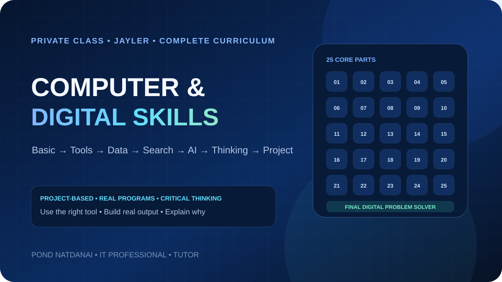

01 · VIDEO REPLAY
วิดีโอแยกตามวันเรียน
ย้อนดูขั้นตอนหรือบทที่ต้องการได้ โดยมีการบันทึกเมื่อผู้เรียนและผู้เข้าร่วมยินยอม
เลือกค้นหาและกรองจาก 15 หลักสูตร ทุกคอร์สเป็น Private พร้อมคลังวิดีโอ สไลด์ คู่มือ และไฟล์ฝึกตามแพ็กเกจ
ลูกค้าแต่ละคนได้รับพื้นที่ Private แยกตามคอร์สและแพ็กเกจ เพื่อกลับมาดูวิดีโอ อ่านสไลด์ และใช้ไฟล์ Workshop ของตนเอง
ย้อนดูขั้นตอนหรือบทที่ต้องการได้ โดยมีการบันทึกเมื่อผู้เรียนและผู้เข้าร่วมยินยอม
เอกสารที่ใช้สอนจริง พร้อมเนื้อหาอ่านต่อที่เหมาะกับพื้นฐานและเป้าหมายของลูกค้า
ไฟล์ฝึก Template หรือ Source Code ถูกแยกตามผู้เรียน ไม่ใช้ลิงก์รวมสาธารณะ
เรียนแบบ 1:1 หรือ Workshop ปรับตามพื้นฐาน หลังเรียนมี Video Replay, Slides, คู่มือ และไฟล์ Workshop ในพื้นที่ Private ของลูกค้าแต่ละคน
CPU, GPU, RAM, Storage, Notebook, Server, OS, Microsoft, License และการอ่าน Specification / Quotation สำหรับงานจัดซื้อ IT
Network, Switch, Wi‑Fi, PoE, VLAN, VPN, Firewall, Security, Server, RAID, Backup, VM และ Cloud สำหรับงานจัดซื้อ IT Infrastructure
Spec Comparison, Datasheet, Compatibility, EOL/EOS, Equivalent / Alternative Product, TCO, Deviation, Recommendation และ Workshop การหารุ่นทดแทนจริง
ภาคเสริมสำหรับ Product Portfolio, Compatibility และ Solution Mapping เมื่อโจทย์ลูกค้าต้องใช้เนื้อหา Enterprise เพิ่มจากหลักสูตรหลัก 3 วัน

หลักสูตรเต็มตั้งแต่ Computer Fundamentals, โปรแกรมที่ใช้จริง, Office & Data, Cloud, Search & Verify, AI, Computational Thinking, Digital Safety ไปจนถึงการเลือกเครื่องมือและสร้าง Project จากโจทย์จริงด้วยตัวเอง
จัดการไฟล์ โฟลเดอร์ ระบบปฏิบัติการ การใช้งานคอมพิวเตอร์ในชีวิตประจำวัน
ฝึกสร้างโฟลเดอร์ ย้าย/คัดลอก/ลบ/ค้นหาไฟล์ ZIP และ Shortcut ผ่านภารกิจจริง
Workshop ฝึก File / Folder / Drive / Path / Save / Save As และนามสกุลไฟล์
Word, Excel, PowerPoint ตั้งแต่พื้นฐานถึงระดับใช้งานในที่ทำงาน
พื้นฐาน Network, IP, DHCP, DNS และแนวคิด Cybersecurity
ChatGPT, Copilot, Claude และการประยุกต์ใช้ AI อย่างมีวิจารณญาณ
เริ่มจากศูนย์ สร้างเว็บจริง และต่อยอดเป็น Mini Project
พื้นฐาน Python, Logic, Function และโปรเจกต์เล็ก ๆ
สร้าง Form, Sheet, Automation และระบบเล็ก ๆ สำหรับงานจริง
ฝึกคิดแบบช่าง IT ตรวจ Windows, Network และแก้ปัญหาอย่างเป็นขั้นตอน

ติดต่อได้หลายช่องทาง เลือกช่องทางที่สะดวก แล้วส่งรายละเอียดงานมาให้ประเมินได้เลย